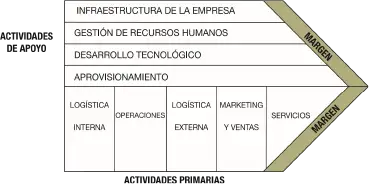
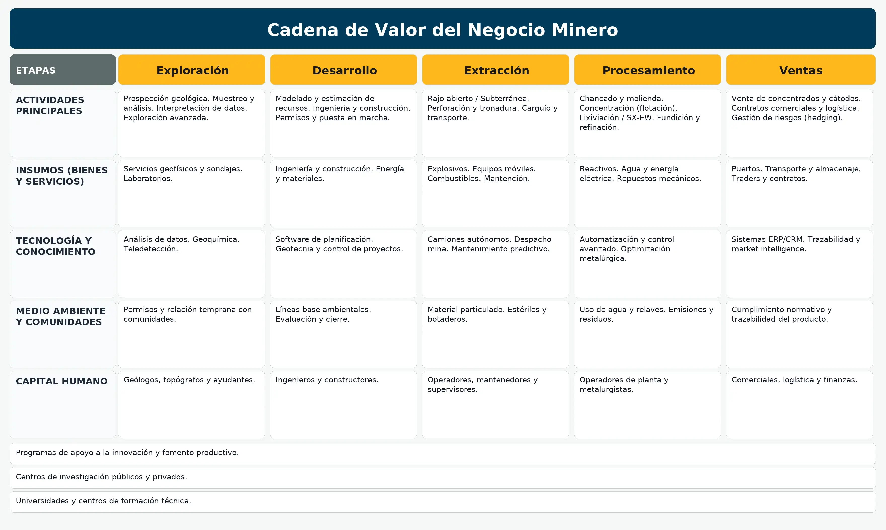

1) Introducción
¿Qué es la cadena de valor? (según Porter)
Cada empresa es un conjunto de actividades que diseña, produce, lleva al mercado, entrega y apoya sus productos. Estas actividades se representan como eslabones que agregan valor paso a paso. La herramienta permite identificar fortalezas, debilidades y fuentes de ventaja competitiva.
2) Cadena de valor genérica
Puedes descargar u abrir en grande el diagrama.
{kind=link}
3) Cadena de valor en minería
- Identifica zonas con yacimientos mediante levantamiento geológico, muestras geoquímicas y estudios geofísicos.
- Perforaciones (sondajes) para observar el subsuelo.
- Evaluación de factibilidad económica de extraer con ganancia.
- Modelamiento del yacimiento y selección de técnicas de explotación.
- Planificación de la extracción.
- Extracción del mineral (explosivos, palas, etc.).
- Separación mineral / estéril.
- Chancado o trituración y clasificación por tamaños.
- Re‑trituración si el tamaño no es adecuado.
- Extracción y transporte a acopio y a la planta.
- Liberación del mineral: trituración, molienda y clasificación.
- Concentración según mineral: lixiviación, flotación, electro‑obtención, etc.
- El grado de liberación depende del costo/beneficio.
4) Esquema básico de minería
Puedes descargar u abrir en grande el esquema.
{kind=link}
5) ¿Qué es “agregar valor” en minería?
Un yacimiento adquiere valor cuando el material valioso se extrae, procesa y concentra. Ese producto final tiene más valor que el recurso en bruto. Este enfoque también aplica a las labores diarias del equipo: cada mejora en seguridad, coordinación o calidad aporta valor al resultado.
- Identifica el lugar de tu área en la cadena.
- Define fortalezas y brechas.
- Propón acciones concretas de mejora.
6) Más información: ¿Cómo agrega valor tu área?
Lectura guiada con ejemplos por área/subárea para identificar mejoras sin completar tablas.
Transporte y logística
- Reducción de tiempos de espera en carga/descarga mediante coordinación con planta.
- Rutas seguras y control de velocidad para disminuir incidentes y reprocesos.
- Checklist de preoperación para evitar detenciones no planificadas.
Seleccionadora / Planta
- Calibración de equipos para minimizar rechazos y retrituración.
- Monitoreo de cuellos de botella (chancado, molienda, clasificación).
- Comunicación visual (andon/tablero) para priorizar órdenes.
Servicios Higiénicos y apoyo
- Disponibilidad y limpieza como factor de continuidad operacional y bienestar.
- Rondas programadas según turnos de mayor tránsito.
- Reporte rápido de incidencias con tiempos de respuesta.
Mantenimiento
- Mantenimiento preventivo basado en condición para prolongar vida útil de equipos.
- Planificación con operaciones para disminuir tiempos fuera de servicio.
- Stock crítico de repuestos para componentes de alta falla.
7) Mini‑quiz (10 preguntas)
8) Reflexión (2 líneas)
Nota: se guarda solo en este dispositivo.